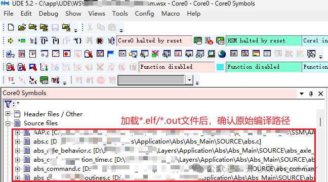
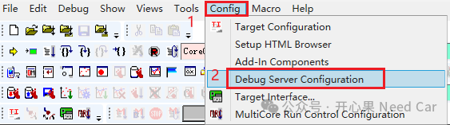
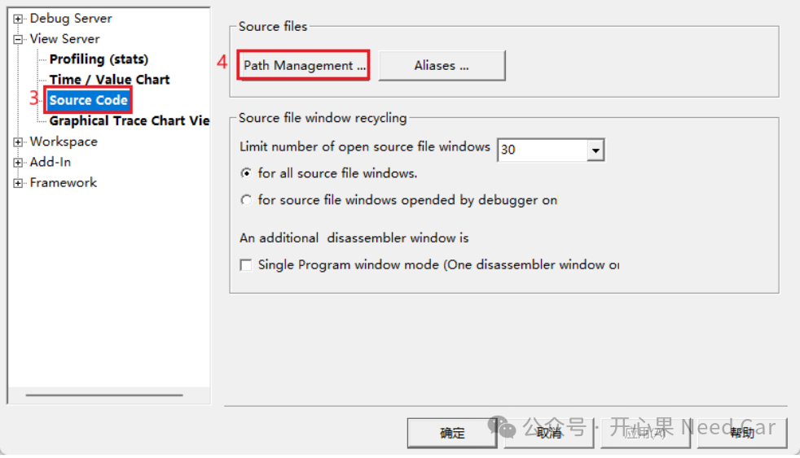
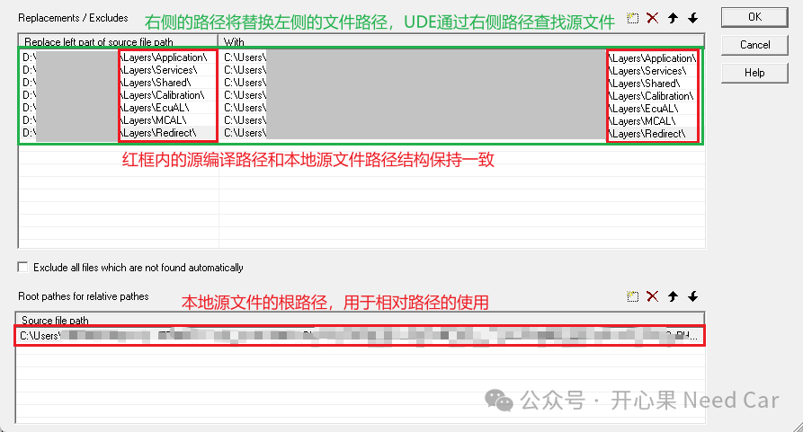
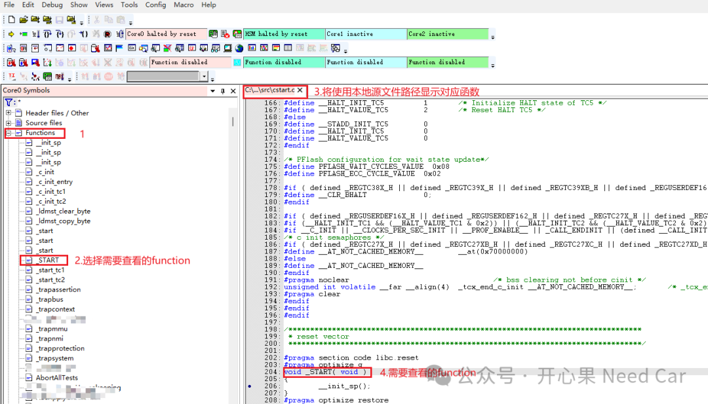
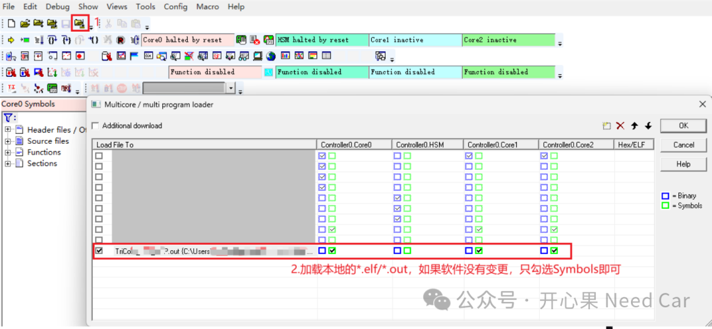
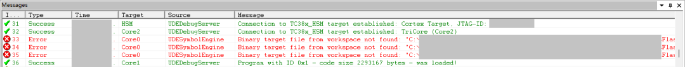

开心果 Need Car · 2026-01-12T06:20:00+08:00 · 微信原文
1.基于PLS UDE的源文件路径替换

源文件路径具体配置方法
（一）打开路径管理窗口
在菜单栏依次选择：Config → Debug Server Configuration → View Server → Source Code → Path Management
如下所示：


（二）设置路径映射
设置操作如下所示：

注意：“Replacements/Excludes”中替换文件路径和本地源文件路径使用\，不是/。
原路径（Original path）：*.elf/*.out文件中记录的源码目录路径，可以在 UDE 左侧文件结构中查看到这些路径。
现路径（Current path）：本地实际存放源代码的路径。
如果无法打开源码，还需检查：路径映射是否生效、源代码是否被加密（例如压缩或加密存档）
（三）调试源文件显示
之后，可以在UDE左侧的Functions中查找需要调试的function，function对应的本地源文件将用于显示软件代码，示意如下：



往期精彩回顾